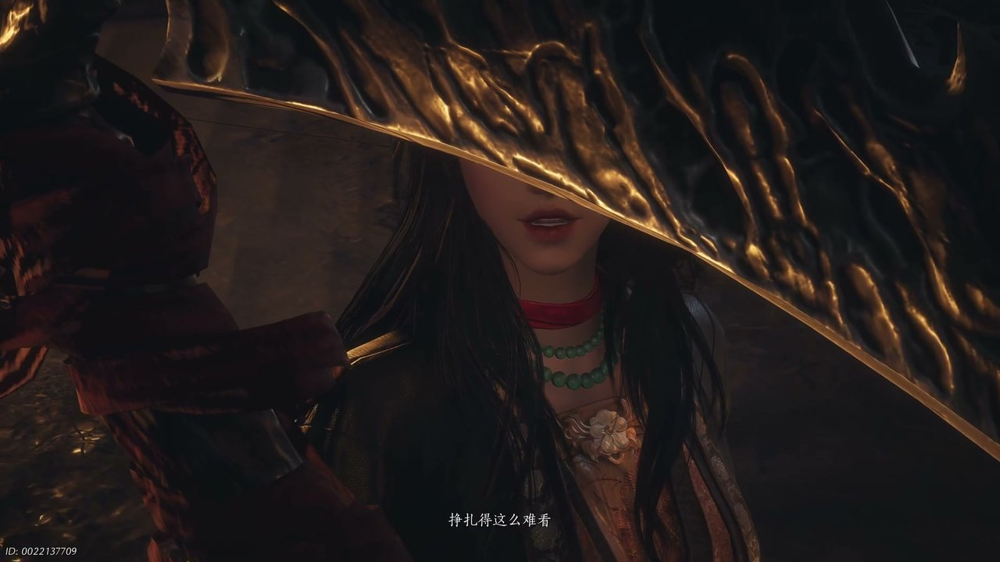

燕云背后的故事：第3集 第三集 红线之死

朋友们，上一集咱们说到——江叔失踪、误会消解、故人托秘，神仙渡安稳表象之下满是未解恩怨。新来的朋友可能纳闷，平平无奇的水乡渡口，为何总能牵扯出滔天江湖风波。简单说，这里是少东家从小到大的归宿，有疼他的寒姨、相伴的红线，还有深藏多年的武林旧事。可他哪知道，一场席卷全村的灾祸，早已在夜色里悄悄酝酿。这不，神秘的绣金楼人马悄然潜入村落，深夜纵火布下迷阵，整个神仙渡瞬间陷入生死绝境。

江湖向来少年意气，白衣仗剑踏遍山河，一句诺言便甘愿赴汤蹈火。清冷风掠过渡口长堤，少年怀揣赤诚初心，以三尺青剑面对世间不平，不问前路凶险，只守心中道义。世间缘分皆是宿命牵绊，相逢一场便是一生羁绊，有人相伴同行，有人默默守护，有人以一生践行侠义。说实在的，这般纯粹滚烫的少年风骨，才是江湖最动人的模样。不问功名富贵，不贪江湖虚名，只愿行遍四方、铲尽奸邪，哪怕前路布满杀机与迷雾，也始终坚守本心不曾动摇，潇洒又悲壮的气韵，早早铺垫好了这场令人心碎的结局。可这乱世之中，谁又能真正全身而退？神仙渡的宁静不过是暴风雨前的假象，少东家与红线那份天真烂漫的江湖梦，终究要被血与火碾碎，而他们最后的挺身而出，恰恰让这份少年侠气在绝境中绽放出最耀眼的光芒。

神仙渡的客栈之内，晚风带着淡淡酒香飘散，少东家轻声询问刀哥身上伤势，两人彻底解开之前的种种误会。两人翻遍江叔曾经居住过的地方，却丝毫找不到半点线索，不由得怀疑是楚清泉刻意欺瞒。少东家坦然说出心愿，想要跟着刀哥远赴开封追查过往，更是郑重立下誓言，自己习得江叔剑法，就一定要查清前辈当年所有恩怨。红线蹦蹦跳跳插话询问大侠故事，刀哥便反问少年侠客最怕什么，红线脱口而出“最怕爹爹妈妈”，刀哥先是一愣，随即深以为然，感慨这世间最重的牵绊莫过于至亲之情。他转头看了看少东家那份固执的赤诚，又看了看红线稚嫩却通透的眼神，竟破天荒地解下缰绳，将一匹神骏战马赠予天真烂漫的红线，算是替她圆一个行走江湖的念想。我跟你说，当时刀哥那眼神，是真打心底认可这两个孩子，一个重诺重义，一个纯真机敏。

渡口旁的青草随风晃动，红线满心欢喜给自己的战马取名滴答，拉着少东家郑重约定，日后二人一同闯荡江湖，做并肩作战的江湖双侠，携手锄强扶弱、行遍天下。少东家心里清楚，追查江叔下落的路途遍布凶险杀机，不忍心带着年幼的红线涉险，便叮嘱她暂且留在神仙渡，安稳当好村落里的小首领。红线满心委屈又万般不舍，反复叮嘱少东家，无论走多远、遇到多少危险，都一定要平安回来探望自己，绝对不能丢下她孤身一人。你别说，这般稚嫩又真挚的约定，往后再回想起来，只让人满心酸涩难忍。可当时的他们哪里知道，命运之轮已经悄然转动，绣金楼的阴影正一寸寸逼近这片平静的水乡，那句“江湖双侠”的誓言，竟成了日后最催人泪下的绝响。

寒姨居住的小院安静清幽，少东家独自回忆在地宫经历的种种过往，零碎的记忆拼凑出爹娘与自己儿时的模样，一直被众人当作孤儿的他，终于下定决心离开家乡，去寻找属于自己的身世归宿。他反复斟酌写给寒姨的辞别书信，再三修改措辞，又担心直白言语惹向来严厉的寒姨生气，纠结许久之后，终究选择不告而别独自远行。寒香寻静静站在院落之中，神色平静却难掩落寞，仿佛早已预料到这场离别，默默目送少年踏上未知旅途。说实在的，谁都没料到，这次寻常离别，竟成了此生难以弥补的遗憾。她或许早已习惯了少年的倔强与莽撞，可那种母子连心的预感，却让她整夜未眠，只是她没有开口挽留，因为她知道，有些路必须由他自己去走，哪怕前方是万丈深渊。

神仙渡僻静角落，酒香弥漫在空气里，刀哥缓缓向少东家说起已故挚友楚清泉。他坦言楚清泉是个甘愿舍命救人的傻子，两人交手厮杀九次，第十次遭遇强敌围攻时，对方非但没有落井下石，反而出手相助。自己为此立下重诺，终生为楚清泉完成一件心愿，不曾想对方只求一同饮酒闲谈。他还诉说楚清泉临终嘱托，让自己来找寒香寻夺取隐秘秘密，自己背着重伤好友日夜奔逃，星月兼程风雨无阻，最后逝者无声离世，遗体坠入黄河不知所踪。看到这儿我都捏了把汗，外表冷酷的死人刀，原来是这般重情重义之人。他嘴上说着楚清泉多管闲事，可每每提及那些并肩厮杀的日子，眼神里却藏着刻骨的伤痛，那份被恩情与友情交织的过往，早已将他打磨成一个沉默而可靠的汉子，也让他更明白少东家那份誓言的重量。

夜深露寒，大批绣金楼杀手突然突袭神仙渡，烈火熊熊燃起吞噬房屋，诡异迷阵笼罩整片村落，乡亲们四处逃窜却始终原地打转，彻底被困在鬼打墙之中无处脱身。少东家与刀哥火速赶回村落救援，众人分工配合，金刚在高处张弓搭箭支援，少东家与同伴冲入火海解救被困村民。很快众人得知红线被困在南侧屋内生死未卜，细心的红线察觉阵法关键针眼破绽，大胆提议从地道狭窄缝隙钻出村落，骑马在外为所有人指引方向破开迷局。可你猜怎么着，小小年纪的她，竟有着远超常人的果敢与勇气。火光照亮她瘦小的背影，她没有哭喊也没有退缩，只是紧紧攥着缰绳，心里念着少东家那句“等我回来”，硬是用单薄的身躯撕开了一条生的希望，那一刻，她早已不是那个只会缠着老大要话本的小姑娘了。

红线小心翼翼钻出狭窄地道，独自骑马冲向阵眼关键位置，行踪很快被绣金楼擅长幻术的妖女察觉，冷箭破空而出狠狠射中柔弱的她。少东家与刀哥火速赶来支援，与歹人展开惨烈激战，两人接连遭受重创，招式渐渐难以支撑，陷入极为被动的险境。危急关头刀哥掏出珍藏多年的十年陈酿离人泪，烈酒洒落当场引燃火光，借着酒劲奋力冲击迷阵壁垒，拼尽全身力气反击敌人。即便如此，妖女武功依旧强悍无比，两人拼尽所有招式，依旧无法扭转颓势，局势一步步走向绝望。血水混着汗水淌下，少东家的剑折了，刀哥的拳也软了，可他们谁也没有后退半步，因为身后是满村百姓，是红线用命换来的那一点点破阵契机，他们只能用肉身硬扛，直到最后一口气。
惨烈大战持续到最后，绣金楼妖女实力碾压全场，肆意嘲讽众人渺小无力的挣扎。遍体鳞伤的少东家已然看淡生死，坦然领悟真正的江湖真谛，原来江湖从不是远方山河，而是身边相伴的知己与情义。天真勇敢的红线，重情仗义的少东家，两位少年以血肉之躯守护家园乡亲，双双壮烈陨落于此。刀哥浑身伤痕奄奄一息，昔日热闹繁华的神仙渡沦为一片焦土，漫天火光散尽之后，只留下无尽悲凉与遗憾。我跟你说，看到少年落幕这一刻，真的忍不住心头酸涩难过许久。可正是这份不惜命的勇毅，才让他们的名字被村民刻进心里，让说书人的醒木在废墟上一次次敲响，少年虽死，侠魂不灭，那缕江湖义气顺着焦土下的根脉，终将在日后长成新的参天大树。
这一集看下来，我最大的感受就是少年侠义滚烫赤诚，通篇故事满是挥之不去的心酸遗憾。上一集里我们只知晓追寻身世、故人嘱托、江湖往来，到了这一集，新增村落遇袭、稚童破阵、挚友诀别、英雄陨落诸多揪心剧情。楚清泉留下的秘密究竟是什么？绣金楼执着寻找的宝物藏在何处？少东家与红线的约定还能否圆满？层层悬念紧紧缠绕，两人离去彻底打乱神仙渡格局，寒姨终将直面积攒多年的血海深仇。很快新一轮恩怨纷争即将拉开序幕，下一集寒香寻孤身对抗幕后黑手。大家不妨聊聊你更心疼勇敢的红线，还是惋惜心怀侠义的少东家，点点关注不迷路，咱们一同深挖江叔尘封多年的过往隐秘。废墟上的篝火还未彻底熄灭，说书人的声音已经在村口响起，那些被鲜血浸透的名字，终将成为江湖中最沉痛的注脚，而寒姨独坐空房时的那一滴泪，又藏着多少未曾言说的往事呢？
关于我们
📱 公众号名称：三天游戏
✍️ 作者：曾三天
扫码关注公众号，获取每日最新资讯

商务合作与版权
商务合作 / 内容投稿 / 品牌推广
请关注公众号「三天游戏」后台留言联系
版权声明：本文由作者整理，转载需注明出处。